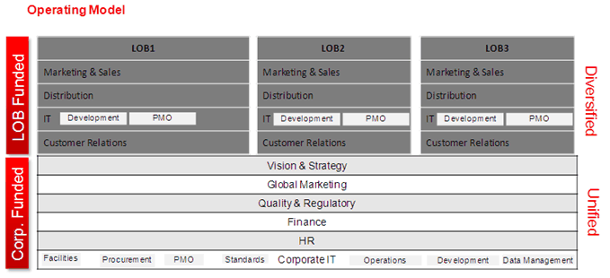
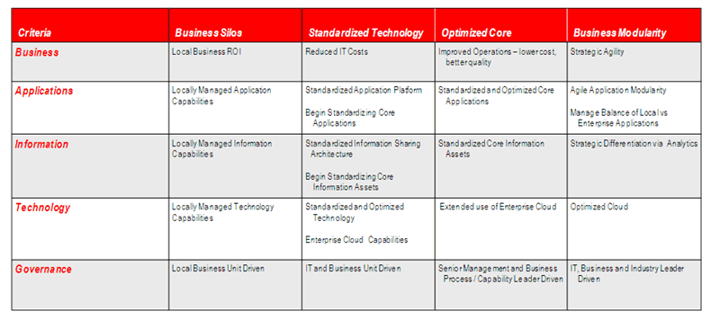
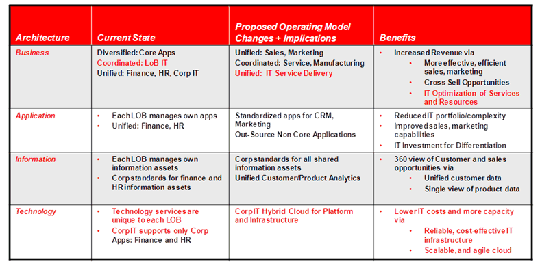

OUM |
Task Overview |
||
Method Navigation |
Current Page Navigation |
||
|
|
||||||||
The purpose of this task is to validate the organization’s Operating Model to examine how it potentially will change to best support the enterprise Business Strategy. The Operating Model should define the organization and their capabilities in terms of its required levels of process integration and standardization in support of the Business Strategy. Thus, the Operating Model represents how an organization operates across the process, organization, and technology domains.
Enterprises are differentiated by, and often defined by, their business processes; an enterprise's Operating Model is a reflection of its business processes. The Operating Model context is typically comprised of the following forces:
The direction and magnitude of these forces should be identified during this task. You should also identify any potential necessary adjustments to the Operating Model that may be necessary for the engagement supporting the Business Strategy.
INIT.ACT.PEF Prepare Envision Foundation
Validated Operating Model
This work product includes information about the current Operating Model, and how it may need to change regarding levels of standardization and integration that IT must deliver to support the business capabilities and their operations as defined by the Business Strategy. It allows the organization and architect to understand the potential scope and constraints for delivering IT services through a common set of processes and resources.
You should follow these steps:
No. |
Task Step | Component | Component Description |
|---|---|---|---|
1 |
Define the Current Operating Model. | Current Operating Model | The Current Operating Model shows the model that supports the current business. |
2 |
Validate the Current Operating Model. | Operating Model Challenges | The Operating Model Challenges describe any challenges that exist in the Current Operating Model that need to change to best support what the business wishes to accomplish. |
3 |
Refine the Current Operating Model to depict the desired future state. | Future State Operating Model | The Future State Operating Model shows the model that is required to best support the desired future state in line with the Business Strategy. |
Obtain any material relevant for defining the Operating Model for the current state of the enterprise or organizational unit under study. In the Operating Model, you should visualize a simple representation of the level of integration and standardization of the enterprise core business processes, and how the IT ownership resources that support each business process are placed within the organization.
Review the Enterprise Organization Structures (BA.020), the Analyzed Capabilities (EA.040), and the Funding Model (GV.090) in order to:
An example Current Operating Model follows:

Review the Business Strategy (BA.010), and identify areas of the Operating Model that may need to change to support the strategy. Together with the enterprise, review the Current Operating Model and identify business capability operations that need to change due to shifts in strategy. Review the Operating Model for each of the following areas:
Determine the level of standardization/integration on a scale from siloed (lowest level of standardization/integration within the enterprise) to modular (highest level of standardization across the enterprise), and where the Operating Model needs to be for each area to best support the Business Strategy.
Consider using an Operating Model Matrix. In the matrix, you identify the current and desired future state for each area. An example Operating Model Matrix follows:

Once you have depicted the Current Operating Model and captured the desired future state, you will be able to identify the challenges needed to support the Business Strategy. Refine the Operating Model to depict the future state, and what business capabilities support different Operating Models, where applicable. Identify the implications to the organization in terms of capability and operational changes that will be required to reach the target state. Use the same areas as mentioned in the previous step (Business, Applications, etc.). Describe the current state of the Operating Model for each area, what the proposed changes are and what the implications of those changes are. For each implication, define the objective benefits to be achieved through the change. Align and discuss these changes with the enterprise in terms of the business objectives and support for business initiatives. An example follows:

This task involves the following method roles:
Role |
Responsibility |
% |
|---|---|---|
Enterprise Architect |
Lead the documentation of the Current Operating Model and the validation and definition of the improved Future State Operating Model. | 100% |
Customer Stakeholders |
This task requires input from customer stakeholders that are key decision makers in the organization, including input from the C-level executives responsible for the Operation Model to ensure that the Validated Operating Model reflects the current situation, and that any potential changes are feasible. | * |
* Participation level not estimated.
You need the following for this task:
Prerequisite |
Usage |
|---|---|
Business Strategy (BA.010) |
Review the Business Strategy to identify the impact on capabilities supporting by the Validate Operating Model. |
Enterprise Organization Structures (BA.020) |
Use the Enterprise Organization Structures to identify the LOBs in the organization. |
Analyzed Capabilities (EA.040) |
Use the Analyzed Capabilities to identify the capabilities the Operating Model should support. |
Funding Model (GV.090) |
Use the Funding Model to identify how resources are funded throughout the enterprise. |
The following techniques are available to assist with this task:
Technique |
Comments |
|---|---|
The Workshop Techniques Handbook provides detailed descriptions of various techniques for delivering workshops during customer projects. |
|
MS WORD - This file contains several sample workshop checklists that can be tailored for delivering workshops during customer projects. |
|
MS WORD - This file contains a sample workshop plan/agenda. |
The following templates and tools are available to assist with this task:
There are currently no templates available to assist with this task.
Tool Guidance |
Comments |
|---|---|
| The Enterprise Architecture Resources contain additional information that can be useful in completing this task. |
The Validated Operating Model is used in the following ways:
Distribute the Validated Operating Model as follows:
Use the following criteria to check the quality of this work product:

Copyright © 2006, 2016, Oracle and/or its affiliates. All rights reserved.